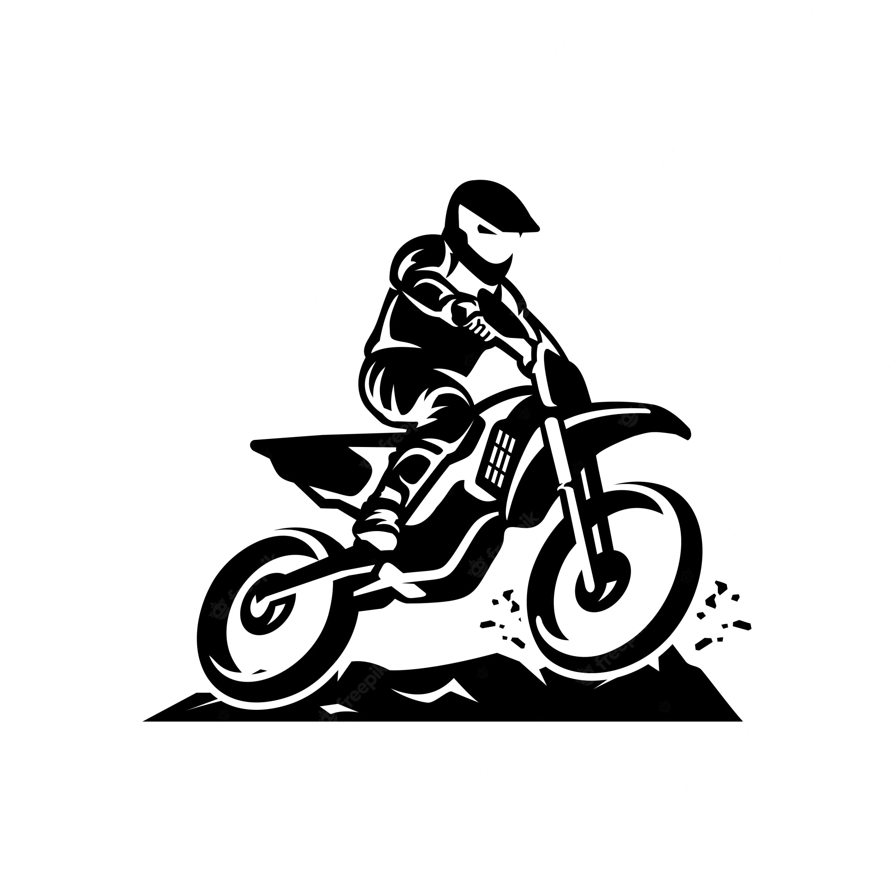

Espacio dedicado a los amantes del motocross, creado para tener todo el mundo del offroad en un solo lugar.

MX-NORTE
Nuestros circuitos


Podes venir a tomar clases con nuestro profesor, el cual cuenta con una amplia experiencia en el mundo del motociclismo offroad profesional. Vas a aprender todas las técnicas necesarias para iniciarte en el deporte y continuar hasta adquirir habilidades increíbles, que te llevaran a lo más alto del deporte.
Desde los 8 años los niños pueden venir a probar nuestras mini motos diseñadas especialmente para ellos y sin límite de edad para los adultos que desean explorar la adrenalina de este deporte.